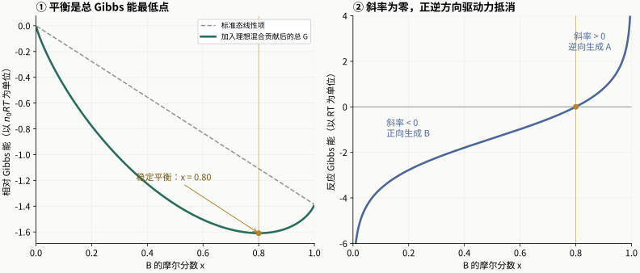

LECTURE 17 · CHEMICAL EQUILIBRIUM I · 2026-11-10
化学平衡Ⅰ：Gibbs 能、反应商与平衡常数
从反应进度与 Gibbs 能最低点，到水蒸气解离、气体和溶液平衡
17.1 · COURSE NOTES
为什么反应停在某个组成
前面几讲用化学势比较同一种物质在不同相中的稳定性。本讲把这条思路推广到化学反应：当反应推进时，各物种的物质的量一起变化，体系的 Gibbs 能 G 也随组成改变。在恒温、恒压、封闭且只有体积功的条件下，自发过程沿 G 降低的方向进行，稳定平衡对应允许组成范围内的 G 最低点。
以合成氨 N2(g)＋3H2(g)⇌2NH3(g) 为背景：初始组成若偏向反应物，生成少量氨可能使 G 下降；随着氨增加、反应物减少，继续正向反应的驱动力也在变化，直到两方向都没有净驱动力。平衡时正、逆反应仍在微观上继续发生，宏观组成保持不变。
平衡位置由热力学决定，达到这一位置的快慢由动力学决定。催化剂加快到达平衡；给定温度及标准态下，平衡常数由反应的标准 Gibbs 能变化决定。有些反应的平衡极偏向产物，实验上表现为几乎完全转化，仍可用同一套平衡框架描述。
来源：PChem1_lec17 Chemical Eqb1 20261110.pdf，PDF 第 1、3–5 页。
17.2 · COURSE NOTES
反应进度 ξ：用一个量追踪所有组分
把反应写成 aA＋bB⇌cC＋dD，并定义带符号的化学计量数 νⱼ：反应物为负，产物为正，例如 νA=−a、νC=c。用这些数可将方程概括为 ΣⱼνⱼJ=0。反应进度 ξ 的单位是 mol；它将各组分的变化合并为一个共同坐标。
合成氨方程按上述系数书写时，ξ 增加 1 mol，N2 减少 1 mol，H2 减少 3 mol，NH3 增加 2 mol。若初始有 1 mol N2、3 mol H2 而没有氨，允许范围为 0≤ξ≤1 mol。反应进度不是某一个物种的量，也不是所有反应都介于零和一之间的转化率。
将整条反应方程乘二，同样一次实际转化所对应的 ξ 数值会减半，因此使用 ξ 前要先固定方程式写法。实际解题先列表 nⱼ,0、νⱼξ、nⱼ，随后所有分压、浓度和反应商都从这一张物料表得到。
实际量的计算可继续写为气相总量 nₜₒₜ=nₜₒₜ,₀＋Δνgξ，前提是把气体物种的计量数统一求和。接着由各 nⱼ占气相总量的比例得到 xⱼ，再乘总压得到 pⱼ。这样，反应计量和状态方程各负责一步：前者决定物料变化，后者将物料变化转换为压力或浓度，最后才进入平衡条件。
来源：PChem1_lec17 Chemical Eqb1 20261110.pdf，PDF 第 2、4、7 页。
17.3 · COURSE NOTES
反应 Gibbs 能：G 对 ξ 的斜率
化学势 μⱼ 是组分 j 的偏摩尔 Gibbs 能，单位为 J mol⁻¹。封闭反应体系中的组分量可以改变，但总物料仍受反应计量约束。从多组分热力学基本式出发，在固定 T、p 时代入 dnⱼ=νⱼdξ，得到本讲的核心定义。
dGT,p = (Σjνjμj)dξ = ΔrG dξ
ΔrG ≡ (∂G∂ξ)T,p = Σjνjμj
对 A⇌B，ΔᵣG=μB−μA；对一般反应，则是产物化学势按系数相加，再减去反应物的对应和。ΔᵣG 描述当前组成处每增加单位反应进度的 Gibbs 能变化。它随组成改变，而有限过程的总变化 ΔG 是沿整条路径累积的结果：ΔG=∫ΔᵣG dξ。
反应焓与反应内能也按单位反应进度定义。若一段过程中相应的摩尔反应量可视为不变，才可将总变化写成 ΔH=ΔᵣH·Δξ 或 ΔU=ΔᵣU·Δξ。将“斜率”和“一整段的变化”分开，后面使用标准反应 Gibbs 能时会更清楚。
来源：PChem1_lec17 Chemical Eqb1 20261110.pdf，PDF 第 2–4、7 页。
17.4 · COURSE NOTES
从斜率正负读出反应方向
| 当前 ΔᵣG | 使 G 下降的方向 | 对反应进度的含义 |
|---|---|---|
| 小于零 | 正向反应 | dξ>0 时 dG<0 |
| 大于零 | 逆向反应 | dξ<0 时 dG<0 |
| 等于零 | 没有净反应驱动力 | 可达的内部稳定平衡为 G 最低点 |
例如 μB<μA 时，A 转成 B 会降低 G；组成变化使两者最终相等，曲线斜率归零。稳定最低点还具有正曲率，微小偏离会产生将组成拉回的驱动力。这里判断正逆方向的条件是当前 ΔᵣG 的符号。
课件把 ΔᵣG<0 的过程称为 exergonic（放能），ΔᵣG>0 称为 endergonic（吸能）。这些术语针对 Gibbs 能；放热或吸热则看反应焓 ΔᵣH，二者各有明确的判据。
来源：PChem1_lec17 Chemical Eqb1 20261110.pdf，PDF 第 3、5 页。
17.5 · COURSE NOTES
混合贡献为什么让 G 出现最低点
先设想只按纯反应物和纯产物的标准 Gibbs 能作线性插值，G 对 ξ 就是一条斜率固定的直线。但反应过程中反应物和产物会共存，各物种的化学势随组成变化，混合项使曲线低于这条直线，平衡可能落在两种物质都存在的中间组成。
对总量为 n0 的理想 A⇌B，令 x 表示 B 的摩尔分数，并选 A 标准态为能量零点。若 ΔᵣG°=−RT ln 4，标准态项随 x 线性下降，混合项为 n0RT[(1−x)ln(1−x)＋x ln x]；两项相加后在 x=0.80 处最低。继续增加 B 虽仍有标准态上的优势，却要承受组成改变带来的化学势差，最终两者抵消。

来源：PChem1_lec17 Chemical Eqb1 20261110.pdf，PDF 第 3–6 页。
17.6 · COURSE NOTES
活度与反应商 Q：把组成装进一个式子
把各组分的实际化学势写为 μⱼ=μⱼ°＋RT ln aⱼ，其中 aⱼ 为相对于选定标准态的无量纲活度。将它代入化学势的计量和，标准态部分成为 ΔᵣG°，所有组成项通过对数规则合并为反应商 Q。
Q = ∏jajνj = aCcaDdaAaaBb
ΔrG = ΔrG°＋RT ln Q
产物的化学计量数为正，所以在分子；反应物的计量数为负，所以在分母。指数来自方程系数。Q 使用当前状态的活度，可以在反应开始后任一组成计算。首次计算 Q 时最好将方程、标准态、各物种物态一起写清。
标准反应 Gibbs 能可用同温度下的标准生成 Gibbs 能列表求得：ΔᵣG°=ΣⱼνⱼΔfGⱼ°。单质在所选参考态的标准生成 Gibbs 能按定义为零；化合物及参与反应的纯固体、纯液体仍要计入这个计量和。
来源：PChem1_lec17 Chemical Eqb1 20261110.pdf，PDF 第 6–8、13–16 页。
17.7 · COURSE NOTES
平衡常数 K 与标准 Gibbs 能
到平衡时，实际反应 Gibbs 能 ΔᵣG=0，把此时的 Q 记作 K，便得到最常用的热力学平衡关系。式中的指数和对数都以无量纲数为对象。
ΔrG° = −RT ln K； K = exp(−ΔrG°RT)
ΔᵣG°<0 对应 K>1，标准态比较偏向产物；ΔᵣG°>0 对应 K<1，标准态比较偏向反应物。平衡时为零的是 ΔᵣG，ΔᵣG° 保留在公式中，由 RT ln K 抵消。若 K=1，则 ΔᵣG°=0，此时产物和反应物的活度乘积相等；多组分反应未必各组分等量。
于是 Q<K 时正向，Q>K 时逆向，Q=K 时平衡。以 A⇌B、K=4 为例，当前 aB=0.20、aA=0.80，则 Q=0.25，正向生成 B；若二者分别为0.90和0.10，则 Q=9，逆向生成 A。K 说明平衡位置，反应速率仍需速率常数及反应路径来描述。
来源：PChem1_lec17 Chemical Eqb1 20261110.pdf，PDF 第 6–8 页。
17.8 · COURSE NOTES
理想气体平衡：分压要除以标准压力
理想气体 j 的活度为 pⱼ 除以标准压力 p°，通常取 p°=1 bar；分压 pⱼ=xⱼp。将这些活度代入 Q，就得到气相反应商及其平衡值 Kₚ。本课以下将 Kₚ 也写成无量纲形式，便于直接接入热力学公式。
Kp = (pNH3p°)²(pN2p°)(pH2p°)³
例如分压用 bar 表示且 p°=1 bar 时，代入分压的数值看起来像直接相乘相除。这来自归一化数值相同。若改用 Pa，则分子和分母中的压力都应与相同单位的 p° 配套；这一做法使计算不受单位选择影响。
来源：PChem1_lec17 Chemical Eqb1 20261110.pdf，PDF 第 6–8、15–16 页。
17.9 · COURSE NOTES
水蒸气解离：先列完整物料表
课件例题：2300 K 时，H2O(g)⇌H2(g)＋½O2(g) 的 ΔᵣG°=+118.08 kJ mol⁻¹，求总压1.00 bar 下水的平衡解离度 α。设初始只有 n0 mol 水，α 为其中发生分解的比例。
| 物种 | 初始量 | 变化量 | 平衡量 |
|---|---|---|---|
| H2O | n0 | −αn0 | (1−α)n0 |
| H2 | 0 | ＋αn0 | αn0 |
| O2 | 0 | ＋½αn0 | ½αn0 |
xH2O = 1−α1＋α2； xH2 = α1＋α2； xO2 = α21＋α2
总气体量随解离增加，分母应统一使用 n0(1＋α的一半)。这一步决定后面的分压表达式。所有初始 n0 在摩尔分数中约掉，因此理想气体条件下、给定温度和总压后，本题的平衡解离度与最初取多少水无关。
来源：PChem1_lec17 Chemical Eqb1 20261110.pdf，PDF 第 9–10 页。
17.10 · COURSE NOTES
水蒸气解离：由 K 求 α 并检查近似
反应 Gibbs 能需先从 kJ mol⁻¹ 换成 J mol⁻¹，以配合 R=8.3145 J mol⁻¹ K⁻¹。令 P 表示无量纲总压 p 除以 p°；根据上表先写出各分压，再化简反应商。
由于 K 较小，可先假设 α 远小于一，将 1−α 近似为1、2＋α近似为2。由此得到可直接计算的估计式：
P=1 时：α ≈ 0.02054，即 2.054%
把该估计带回完整表达式检查，数值求解得 α≈0.02033，即2.033%。小解离度近似的相对误差约1.04%，与课件“约2%”的结论一致。解离度是反应掉的初始水占比；平衡水摩尔分数还要除以变化后的气体总量，二者通过物料表联系。
同一温度下，K 固定。近似式中 α 随 P 的立方根倒数变化：降低总压会增加解离。这个结论也符合反应气体计量数增加½的结构，压力的完整响应将在后续讲次继续讨论。
数值求解时可把完整式左侧的反应商写成 α 的函数，在0与1之间寻找它和已知 K 的交点。本题该函数随 α 增大而增大，因此用二分法就能稳定求解：先比较试探 α 的反应商与 K，偏大则减小 α，偏小则增大 α。这个算法保留了物理范围，也很适合检查代数变形后的多个数学根。
来源：PChem1_lec17 Chemical Eqb1 20261110.pdf，PDF 第 9–11 页。
17.11 · COURSE NOTES
改写反应方程后，K 怎样改变
平衡常数与所写反应绑定。方程整体乘以 λ，所有 νⱼ都乘以 λ，ΔᵣG°也乘以 λ；反应商的全部活度指数同时倍乘，所以新常数为 K 的 λ 次方。逆反应取 λ=−1，对应常数倒数。
若 N2＋3H2⇌2NH3 的常数为 K1，那么 ½N2＋32H2⇌NH3 的常数 K2=√K1，也就是 K1=K2²。物理上的平衡混合物相同，表达式却随方程系数改变。
反应组合也遵循同样规则：标准 Gibbs 能相加时，ln K 相加，所以 K 相乘。课件把 C(s)＋O2(g)⇌CO2(g) 记作反应1，CO(g)＋½O2(g)⇌CO2(g) 记作反应2。反应1减去反应2得到 C(s)＋½O2(g)⇌CO(g)，对应 ΔᵣG3°=ΔᵣG1°−ΔᵣG2°，K3为K1除以K2。
来源：PChem1_lec17 Chemical Eqb1 20261110.pdf，PDF 第 12 页。
17.12 · COURSE NOTES
多相平衡：纯固体和纯液体的角色
多相反应仍使用 Q=∏aⱼ^νⱼ。纯固体和纯液体以相应纯相为标准态，常压附近可将活度近似取为1，于是它们在 Q 的乘积中成为单位因子。它们的标准化学势仍参与 ΔᵣG°，这就同时解释了“分压表达式省略纯凝聚相”与“计算反应 Gibbs 能仍包含它们”。
凝聚相摩尔体积较小，常规压力范围内可忽略上述压力修正。高压下若要精细计算，再保留这项即可。此处的活度等于一针对独立纯相；溶在液体里的反应物或固溶体组分，应按其实际活度处理。
Q = pCO2p°； pCO2,eq = Kp°
因此，在给定温度且 CaCO3、CaO 两个纯固相均存在时，平衡 CO2 分压由 K 固定。增加某一固体的量主要改变可反应的储量；若一种固相已经耗尽，原来的两固相共存条件随之结束。压强式应始终结合实际存在的相使用。
来源：PChem1_lec17 Chemical Eqb1 20261110.pdf，PDF 第 13–14 页。
17.13 · COURSE NOTES
Kₚ、Kₓ、K𝚌、Kₙ：先统一定义再换算
对理想气体，利用 pⱼ=xⱼp=cⱼRT，可把同一个平衡条件写成分压、摩尔分数、浓度或物质的量的形式。定义 Δνg 为气体产物计量数之和减去气体反应物计量数之和，nₜₒₜ 为气相总物质的量。下列 K𝚌和Kₙ采用参考量 c°、n°归一化，全部保持无量纲。
Kp = Kx(pp°)Δνg = Kc(RTc°p°)Δνg
Kp = Kn(pn°p°ntot)Δνg
热力学 Kₚ在固定标准态下只随温度改变；Kₓ在 Δνg≠0 时还显含总压，Kₙ还与所取气体总量的尺度有关。采用固定 c° 时，K𝚌和Kₚ之间的换算因子只含温度与常量。当 Δνg=0，上述修正因子都等于一，四种归一化写法数值一致。
课件也列出直接将有单位的 cⱼ、nⱼ相乘的传统写法。使用这种约定时，要同时带上相应单位与标准量因子。推导中先明确定义，便能把熟悉的 Kₚ与K𝚌换算和严格的热力学 K 接起来。
来源：PChem1_lec17 Chemical Eqb1 20261110.pdf，PDF 第 15–16 页。
17.14 · COURSE NOTES
真实气体：用逸度修正分压
真实气体中，分子间作用使化学势偏离理想气体结果。将分压替换成逸度 fⱼ，并写 fⱼ=φⱼpⱼ，其中 φⱼ 为该混合气中组分 j 的逸度系数，即可保留同样的活度结构。
K = KpKφ； Kφ = ∏φjνj
从 ΔᵣG°求到的是热力学 K；若要得到分压或平衡组成，则还需逸度系数。φⱼ通常依赖温度、压力及混合组成，因此实际计算可先估计组成，计算 φⱼ，更新平衡组成，再迭代。低压趋近理想气体时，φⱼ趋近一，热力学 K 与分压写法重新一致。
来源：PChem1_lec17 Chemical Eqb1 20261110.pdf，PDF 第 16 页。
17.15 · COURSE NOTES
质量摩尔浓度标准量通常取 b°=1 mol kg−1，浓度标准量常取 c°=1 mol dm−3；使用哪一套标准态，就使用配套的活度系数与标准 Gibbs 能数据。
溶液反应：活度系数与溶剂项
溶液中的统一入口仍是 μⱼ=μⱼ°＋RT ln aⱼ。对溶质，可按质量摩尔浓度 b 或物质的量浓度 c 的标准态定义活度；两种约定各有对应活度系数 γ，所用的标准化学势也应与之配套。
K = KγKb 或 K = KγKc； Kγ = ∏γjνj
当各相关活度系数足够接近一时，活度表达式可用相应的归一化浓度表达式近似，得到常见的初等平衡计算。活度系数要在平衡组成下评价，电解质等体系还会受到离子强度影响。
若反应中的 A 是大量溶剂，则以纯溶剂为标准时 aA=γAxA。稀溶液里 xA接近一、相应 γA也接近一，可将溶剂活度近似取一；这就是很多水溶液反应的平衡式没有显式写水的来源。写 Q 时先保留所有物种，再根据纯相或大量溶剂条件化简，步骤会更稳。
来源：PChem1_lec17 Chemical Eqb1 20261110.pdf，PDF 第 14–16 页。
17.16 · COURSE NOTES
应试公式表与四类推导题
| 要解决的问题 | 使用的关系 | 落笔前确认 |
|---|---|---|
| 当前反应向哪边进行 | ΔᵣG=RT ln(Q与K之比) | 用当前活度计算 Q |
| 从热力学数据求平衡位置 | ΔᵣG°=−RT ln K | 温度、单位、反应方程 |
| 从 K 求解离度或组成 | nⱼ=nⱼ,0＋νⱼξ，再代入 Q=K | 总气体量随 ξ 改变 |
| 更换反应写法 | 系数乘 λ，K 取 λ 次方 | 逆反应对应倒数 |
| 实际气体或溶液 | 逸度系数或活度系数修正 | 标准态与平衡组成 |
| 纯固体、纯液体共存 | 纯相活度近似一 | 各纯相仍存在 |
推导题一：从 dG 基本式推出 ΔᵣG=Σνⱼμⱼ，再由化学势的活度表达式导出 Q。推导题二：令平衡斜率为零，推导 ΔᵣG°与K的关系，并说明 ΔᵣG 和 ΔᵣG°各是什么。推导题三：独立重建水解离的物料表、完整 K(α,P) 和小解离度近似，最后代回检查。推导题四：从 pⱼ=xⱼp=cⱼRT 推出各种常数的换算，并用 Δνg=0 检查极限。
本讲关键词：extent of reaction 反应进度；reaction Gibbs energy 反应 Gibbs 能；reaction quotient 反应商；thermodynamic equilibrium constant 热力学平衡常数；degree of dissociation 解离度；heterogeneous equilibrium 多相平衡；fugacity 逸度。核心关系可串成一条链：物料计量给组成，组成给活度，活度给 Q，Q 与 K 的比较给反应方向。
来源：PChem1_lec17 Chemical Eqb1 20261110.pdf，全讲归纳；推导题为笔记补充。